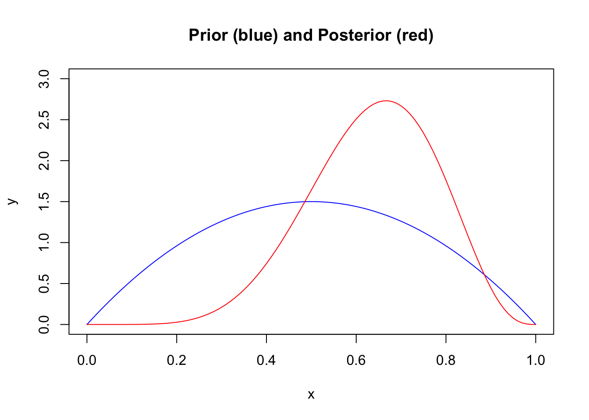

Set 7 Set 5
7.1 Monte Carlo Idea
Suppose we can sample from \(p(\theta \vert \text{data})\). Then we could generate,
\[\begin{align} \theta^{1},\ldots,\theta^{S} \sim p(\theta | \text{data}) \end{align}\]
and obtain Monte Carlo approximations of posterior quantities:
\[\begin{align} E(g(\theta) \vert \text{data}) \approx \frac{1}{S} \sum_{i=1}^S g(\theta^i). \end{align}\]
But what if you can’t sample from \(p(\theta \vert \text{data})\)?
7.2 Metropolis Algorithm
The metropolis algorithm proceeds as follows:
Sample \(\theta^{\star} \sim J(\theta \vert \theta^{s})\)
Compute the acceptance ratio, \(r\):
\[r = \frac{p(\theta^\star \vert \text{data})}{p(\theta^{s} \vert \text{data})}\] 3 Let
\[\begin{equation} \theta^{s+1} = \begin{cases} \theta^{\star} & \text{with prob min}(r,1) \\ \theta^{s} & \text{otherwise} \end{cases} \end{equation}\]
Step 3 can be accomplished by sampling \(u \sim \text{Unif}(0,1)\) and setting \(\theta^{s+1} = \theta^\star\) if \(u < r\) and setting \(\theta^{s+1} = \theta^s\) otherwise.
7.3 Example
\[\begin{align} p(\beta \vert \text{data}) &\propto p(\text{Data} \vert \beta) p(\beta) \\ &= \text{likelihood} \times \text{prior} \end{align}\]
For the model,
\[\begin{align} p(\text{data} \vert \beta) = (2\pi \sigma)^{-n/2} \exp{\bigg( -\frac{1}{2 \sigma^2} (y - X \beta)^T (y - X \beta) \bigg)} \end{align}\]
We will use the proposal distribution,
\[\begin{align} J(\theta^{\star} \vert \theta) \sim N(\theta, cI) \end{align}\].
How do we sample from this distribution?
